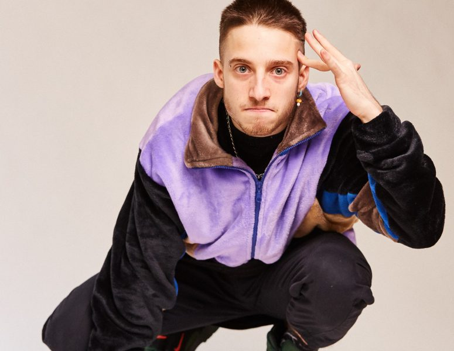

#BIOGRAFIA
Valentín Oliva
MC y Freestyler, mejor conocido como Wos, nació en Chacarita, Buenos Aires el 23 de Enero de 1998. Es hijo del director Alejandro Oliva y la cantante Maia Mónaco. Actualmente es considerado uno de los mejores exponentes del Freestyler latinoamericano. Wos se dio a conocer a través de El Quinto Escalón en 2013. En 2017, ganó la Red Bull Batalla de los Gallos Argentina y un año después la Red Bull Internacional. Wos hizo su debut musical con el sencillo _Protocolo_ en 2017. En 2019, lanzó su álbum debut Caravana junto a los sencillos Canguro y Melón Vino.